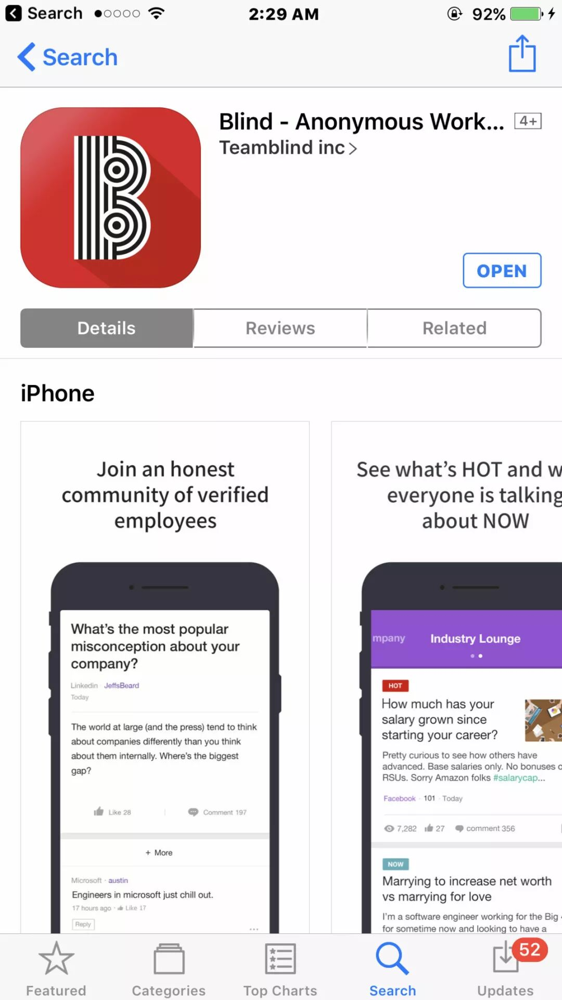
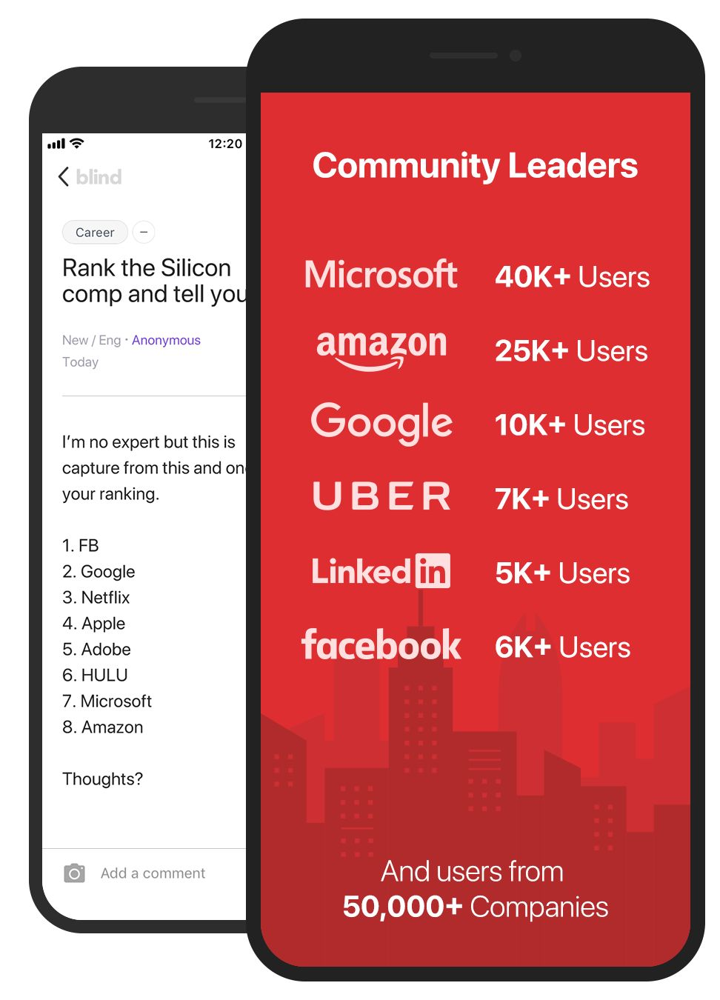
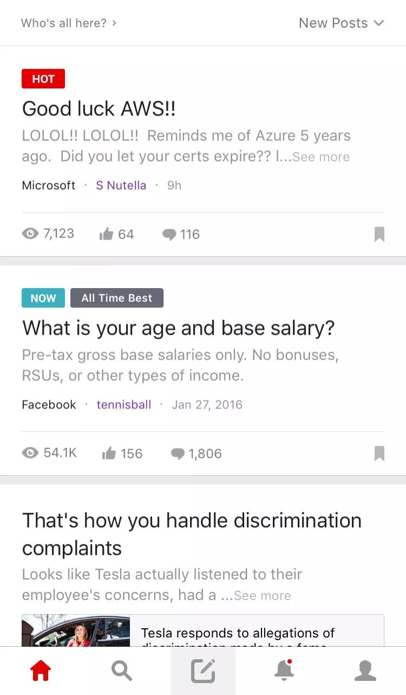

作为一个土生土长的中国人，在硅谷和主流的美国文化总是有些许隔阂。在公司里，尤其是在一个白人文化为主的公司里，大部分业务上的事情了解起来是没有什么问题。然而要是我们真的想找美国同事吐吐槽，甚至了解一些公司里的八卦，最近派系斗争的来龙去脉，还真是不太容易。
有没有什么好的办法，可以轻松了解公司动态，把握时代脉搏呢？
最近我经同事介绍，隆重向大家推荐这款叫Blind的APP。不过目前只有美国的app store有下载，而且能注册的只有美国的中型以上的科技公司员工 (因为小公司的话人太少，难以保证匿名)。


Blind是一款什么样的APP？
Blind是一款类似于百度贴吧的APP（当然它的运营没有百度贴吧那么无下限），然而它跟百度贴吧有两点功能上的不同。
第一点是所有的人员都是完全匿名的。这从它的名字Blind就可以看出来。
第二点是所有的用户都从属于自己公司的小贴吧社区，而且只有当你有对应公司的email的时候，你才能注册并加入对应公司的小贴吧社区，在其中发帖以及回复。
要是只有第一点不同的话，它就跟国内的【秘密】APP以及国外的【Secret】APP一样了。正是加上了第二点，才让Blind这个APP全然不同。
在这里，你可以看到最近公司内部将要或者已经进行的reorg的来龙去脉，也可以知道哪个高管和哪个高管有矛盾或者冲突，哪个组和哪个组有利益的纠缠。大家会在这里讨论公司里什么岗位拿多少钱，升职加薪一般都是这么一个流程，加多少。针对最近公司内发生的一些敏感或者突发的事件，很有可能明面上大家都大事化小，小事化了了，在这里你可以看到更加真实的事件背后的故事。

虽然这些信息相当的碎片化，但是我觉得掌握这些信息还是很有用的。有了这些信息的话我们才可以做出更加好的决定，比如什么时候跳槽，选择什么项目，跳去哪个组为哪个老板干活等等。
据说国内也有一过一款模仿Blind的同类产品叫吐司，不过因为种种原因现在已经关闭了，据说关闭的原因是负能量太多了。
也许是吸取了类似的教训吧，在Blind上面要是超过一定比例的用户觉得某些帖子不合适而举报的话，相关的帖子会被自动删除，相关的发布者也会被禁言一段时间。至少截止目前，我觉得Blind在这方面还是做得不错的，我在上面没有看到很严重的谩骂以及人身攻击，这对于一个完全匿名的社区来说实属不易。
文后附上推荐码iv8ADsW0，Blind最近在搞活动，推荐人还有Amazon Giftcard拿哦。赶快行动，不容错过。